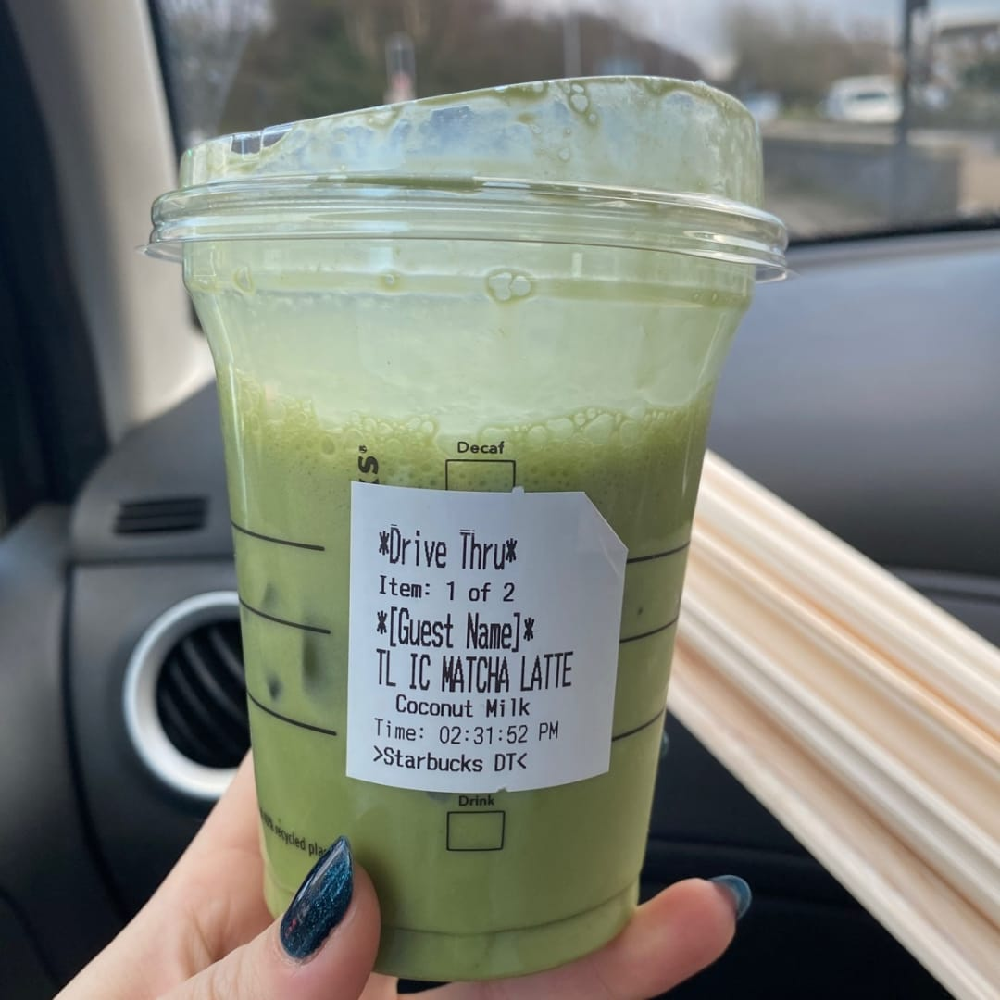

Today's Topic: The Cultural And Historical Significance of Our Favorite Beverage
You like matcha too? Trust me, I get it. It’s a little nutty, a little bitter, a LOT perfect. When that smooth earthiness hits your tongue, all your problems seem to just fade away. And don’t even get me started on the beautiful color. It's really no wonder why matcha has become so popular these days.
The global matcha market size was valued at USD 2.62 billion in 2016 and is expected to witness a growth at a CAGR of 7.6% from 2017 to 2025.
But how much do you really know about matcha? Why has it become so popular? I have a few thoughts I’d love to share. Grab a cup of your favorite green drink (you know which one I’m talking about), and let’s have a little
coffee tea chat.
Matcha is not just powder, sugar, and milk...
Matcha is not that “grande cup of coconut milk mixed with unauthentic green, sugary powder and two pumps of vanilla syrup” you get at Starbucks. Matcha has a very special history and holds significance in Japanese culture.

“Starbucks doesn’t even use matcha in their so-called matcha drinks. They use green tea powder, which is the second ingredient after sugar.”
Interestingly, the premium Japanese ingredient actually originated in China during the Tang Dynasty where the Chinese would ground the tea leaves to make powder for easier transportation and trade. Pretty clever, huh?
In 1191, a Japanese Buddhist monk Eisai brought tea leaves from China back to Kyoto, but it wasn’t until the 1500s did the Japanese develop tea ceremony traditions with matcha. We have Murata Juko to thank for that!
Murata Juko, founder and creator of the Japanese tea ceremony.
Murata developed several pillars of the tea ceremony that we still use today, and Zen Master Sen-no-Rikyo formed the four basic principles of the Japanese Tea Ceremony:
Harmony (wa)
Respect (kei)
Purity (sei)
Tranquility (jaku)
The Japanese Tea Ceremony is called “Chado” or “Sado.” Translated, this means “The Way of Tea.”
A lot of preparation goes into drinking tea in Japanese culture. It is often served to guests by hosts, and thus, commemorates a special moment of hospitality and strong bond. Matcha should also be enjoyed with just as much care and should be a mindful practice Try sipping your tea slowly, without your Instagram feed in front of you next time.
"Drink your tea slowly and reverently, as if it is the axis on which the world earth revolves–slowly, evenly, without rushing toward the future.”
-Thich Nhat Hanh
Matcha comes from Japan. Yoga and turmeric come from India. Quinoa comes from Peru...
None of these “health” foods are white, and yet, they are still being commercialized in the wellness market and sold for an alarmingly jacked up price. The White-Savior complex is everywhere–food and health is no exception. When can we finally stop white-washing wellness?
I talked to three of my Japanese friends (Sally, Yuri, and Cherry) and here’s what some of the more strongly opinionated ones had to say about the growing popularity in matcha:
“Why does America have to turn matcha into a cup of diabetes?”
“When I tell people I'm Japanese, they always bring up matcha...”
My opinion?
It’s definitely a tricky topic. I personally love yoga and incorporating foods like quinoa to give texture to my foods. I think it’s great that different cultural foods are being accepted and widely appreciated in the U.S. But I think that there is, in fact, a right and wrong way to “appreciate” these things. We should all try to be more respectful and at least try to educate ourselves around what the traditional practice of consuming matcha means in Japanese culture.
Corporations like the popular chain Cha Cha Matcha and our friends at Starbucks don’t do a very good job at this...
Cha Cha Matcha co-owners have also been accused of racial profiling and posting culturally appropriative content online.
Adding a unique twist to something traditional can definitely be cool, but if it’s to the point where the actual culture is not recognizable in the end product anymore, then that’s a different story.
Matcha is not a trend...
If you have Instagram, you know what I”m talking about. “That Girl” is the girl who wakes up at 7am, goes to yoga, makes a smoothie, then drinks her matcha while journaling and having her perfect little life together.
The recent social media trend "That Girl" is a romanticized image of a girl who lives the so-called perfect life, which includes a matcha latte in hand at all times, of course.
Social media helped this recent obsession with being That Girl grow, and matcha continues to become popular because of our gal pal here. The problem with this, however, is that social media takes away the cultural significance of matcha and gives it a more superficial purpose. Sure, there are scientific studies that it helps reduces the risk of heart disease, stroke, cancer, arthritis, and a decline in cognitive function.The motivation for drinking matcha no longer becomes enjoying and appreciating a culture; it almost becomes a platform to seem trendy.
Famous Tik-Toker Addison Rae's (and other celebrities') posts help "trendify" matcha.
Why does everything have to be commemorated on social media? Would matcha even be this popular without the help of Addison Rae's tweet? Without the Instagram algorithm? Without Diplo investing in chains like Cha Cha Matcha?
Now that's something to think about...